ADHD CYP Pathway DES
DES modelling flow of children and young people through an ADHD diagnostic pathway, with streamlit web app.
Welcome to the Healthcare Services Analytics & Decision Science Atlas.
This is a directory of open-source tools, packages, and projects for analytics and decision science in healthcare.
This site is in its very early stages - please check back as we continue to develop it.
In time, we hope this can develop into a tool to help showcase the amazing work happening across the analytics and data science communities in healthcare, promoting reuse and collaborative work on the tools we all need.
Click on the links below, or use the menu bar to navigate.
A showcase of projects, code packages, scripts and other resources that may be of use
Books, courses, tutorials and communities to help you build your skills
An overview of advanced analytics, operational research and data science techniques and their possible applications
A showcase of graph types of use in healthcare contexts
Search hundreds of recorded conference talks, webinars, workshops and network huddles from across the health and care analytics community, all in one place
A random selection of entries from across the Atlas - reload the page to see a different set.
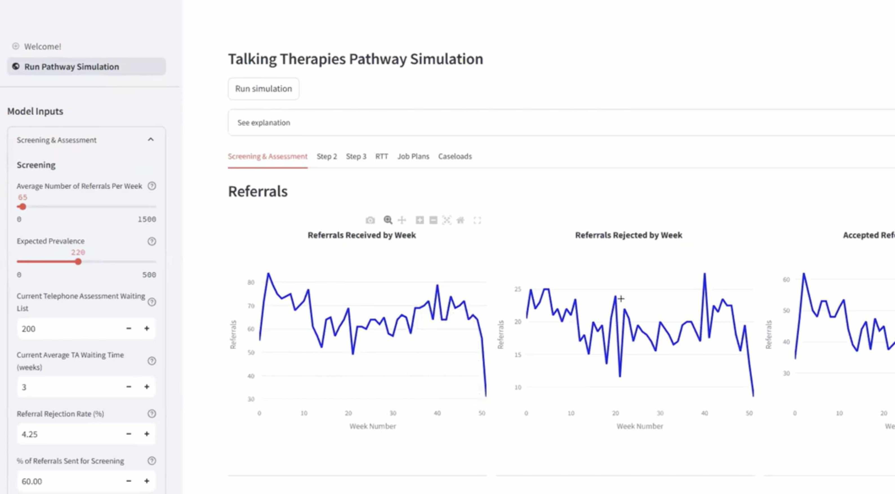
DES modelling flow of children and young people through an ADHD diagnostic pathway, with streamlit web app.
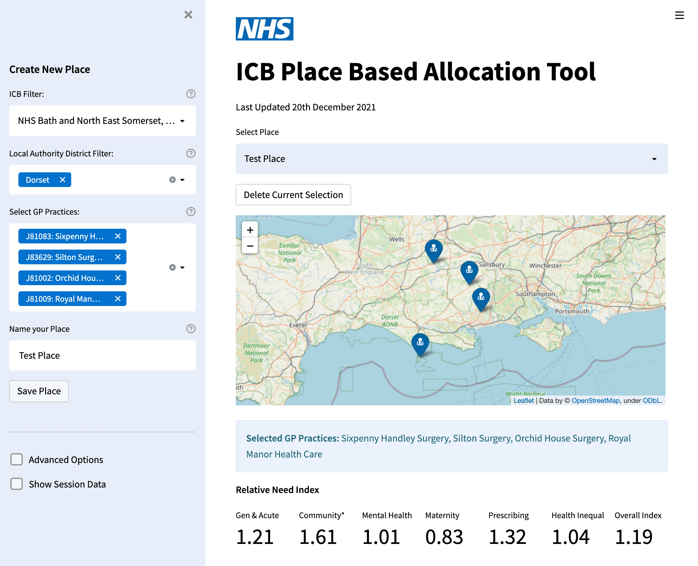
Python tool to assist Integrated Care Boards (ICBs) to perform need based allocation based on defined place. A 'place' is defined within an ICB as a cluster of GP practices. Relative need indices are then calculated and output as a csv.
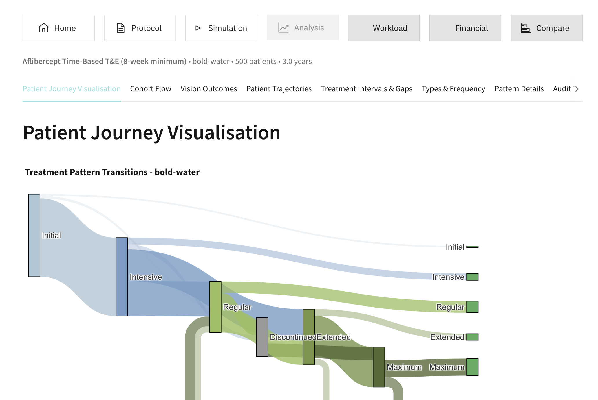
DES of opthalmology pathways, allowing the exploration of the impact of different anti-VEGF treatment strategies on patients and costs.
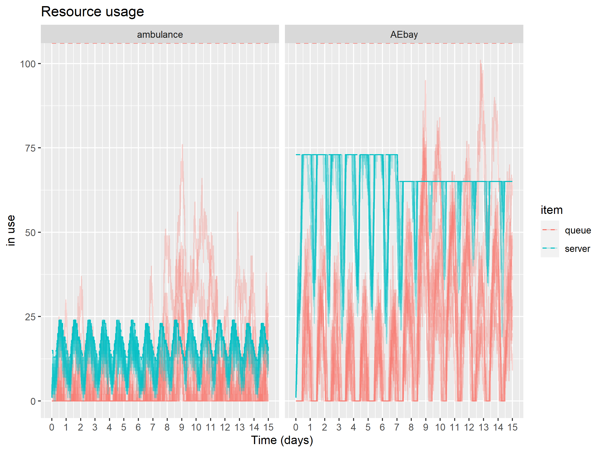
Discrete Event Simulation in RSimmer of Ambulance Job Cycle Times.
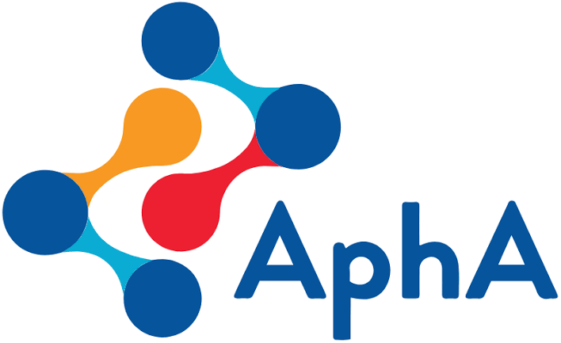
AphA is the professional membership body for health and care data and analytics professionals in the UK. It aims to raise the profile of analysts and provide a professional support network, offering professional accreditation, mentoring, networking events, an annual conference, discounted training and course accreditation, delivered through regional branches and specialist networks.
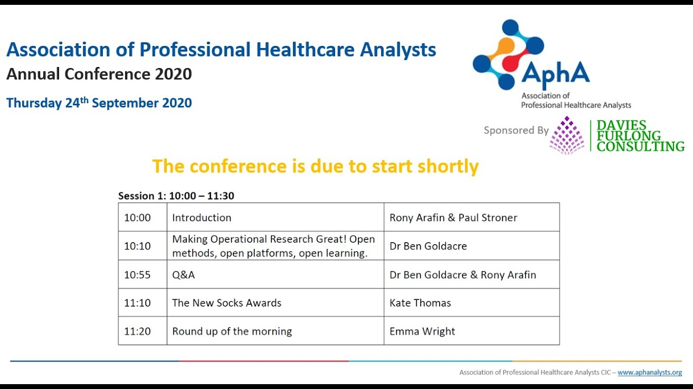
Recordings from the Association of Professional Healthcare Analysts (AphA), the professional body for health and care data and analytics professionals in the UK. They include its regular Lunch & Learn webinars, branch meetings, workshops, and its 2020 and 2021 annual conferences, covering topics from statistics, data visualisation and data storytelling to AI, data platforms and the analytical workforce.
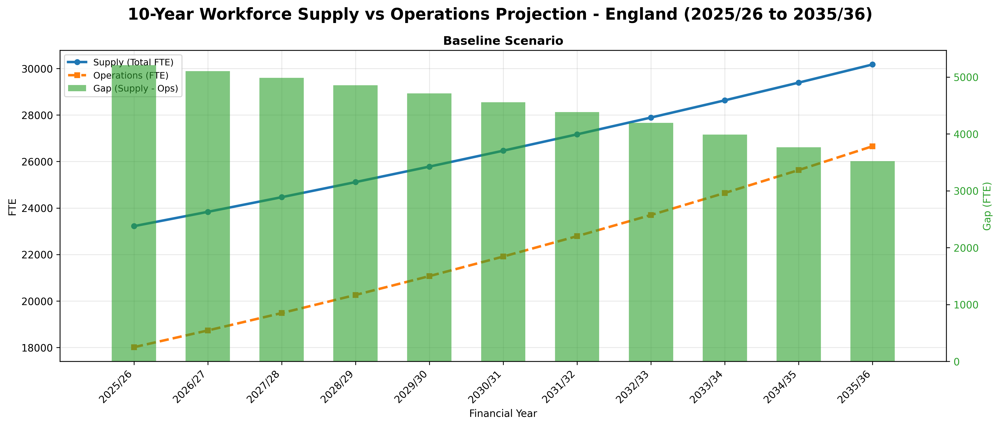
Workforce projection model to support NHS workforce planning for community pharmacy services, with a focus on pharmacists and pharmacy technicians. Using entirely open data (Community Pharmacy Workforce Survey, GPhC registers data and NHSBA Consolidated Pharmaceutical List), it generates workforce projects and gap analysis visualisations for different scenarios.
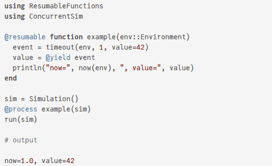
A discrete event process oriented simulation framework (formerly SimJulia) written in Julia inspired by the Python library SimPy. It is helpful for building simulations of pathways and services, allowing 'what-if' questions to be tested.
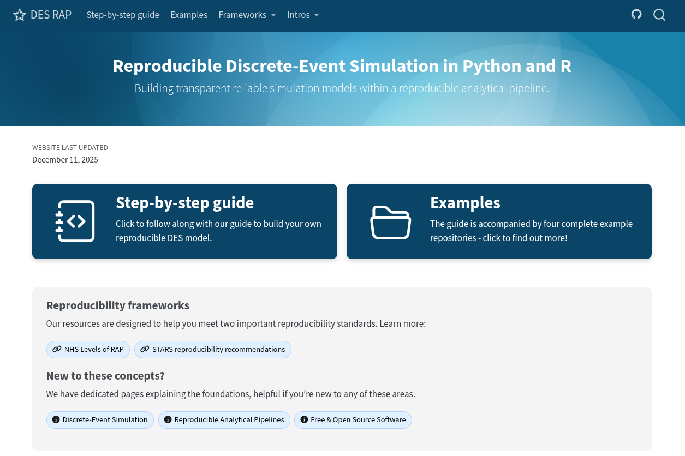
DES RAP Book is an open resource and website for building discrete-event simulation (DES) models within a reproducible analytical pipeline (RAP), supporting the healthcare simulation community. DES models are often used for building simulations of pathways and services, allowing 'what-if' questions to be tested. The resource demonstrates practical, code-based workflows and tools to help researchers and practitioners develop, validate, and share DES models in Python (SimPy) and R (simmer), ensuring models are reproducible.
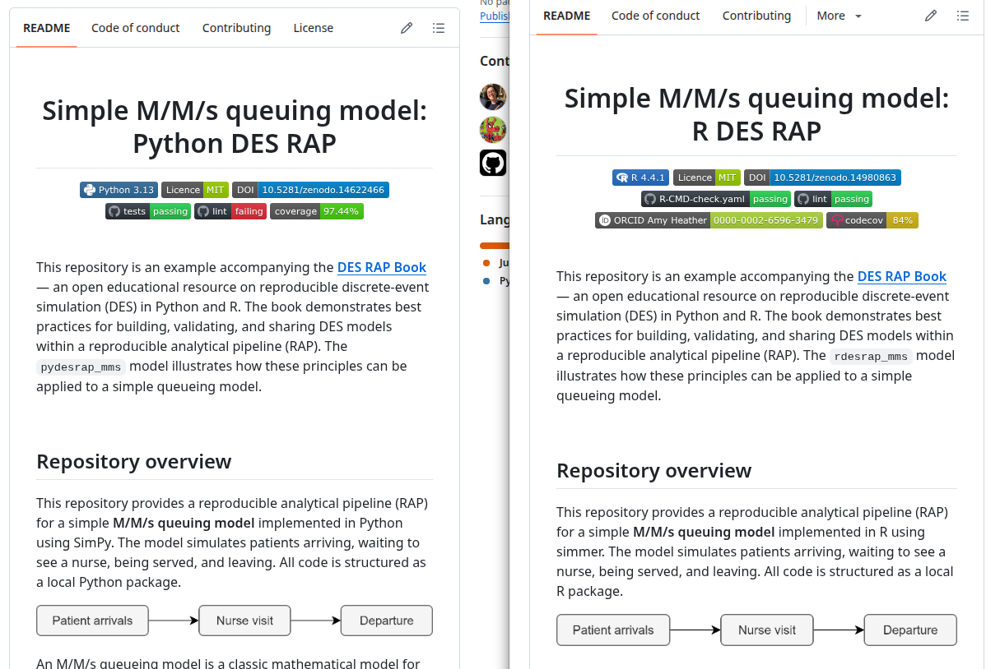
Two equivalent repositories implementing a simple M/M/s queueing model - one using Python (SimPy) and one using R (simmer).
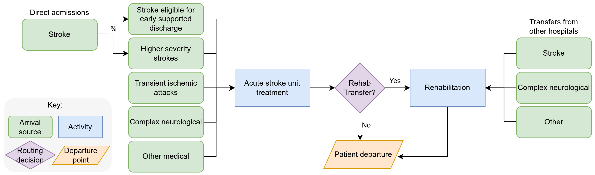
Two equivalent repositories implementing a stroke capacity planning model - one using Python (SimPy) and one using R (simmer).
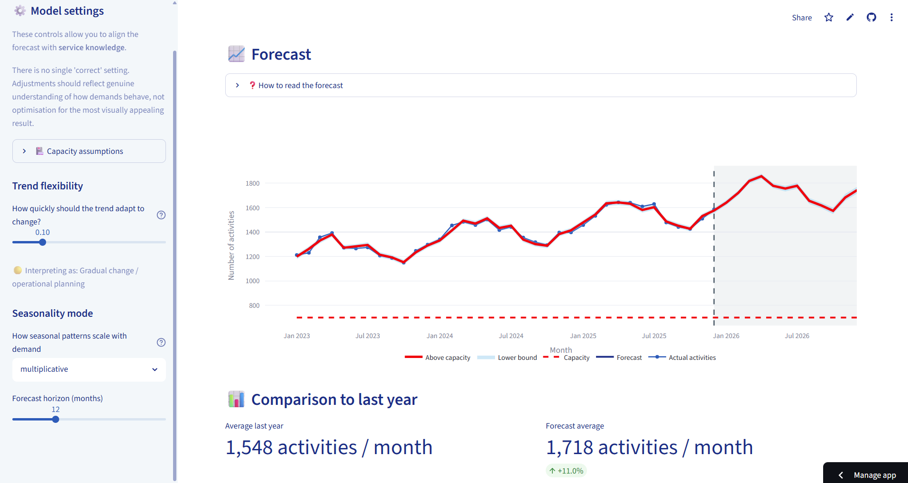
This flexible tool uses the Facebook Prophet time series forecasting model to generate forward projections of demand, providing a simple way to turn historical activity data into actionable insights for planning. Intuitive visualisations and narrative summaries highlight trends, seasonal patterns, and uncertainty.
The tool also supports capacity-aware analysis by comparing projected demand against service limits, allowing identification of potential pressure points, quantification of gaps between demand and capacity, and exploration of how changes in assumptions may affect outcomes. Results can be exported as a shareable report.
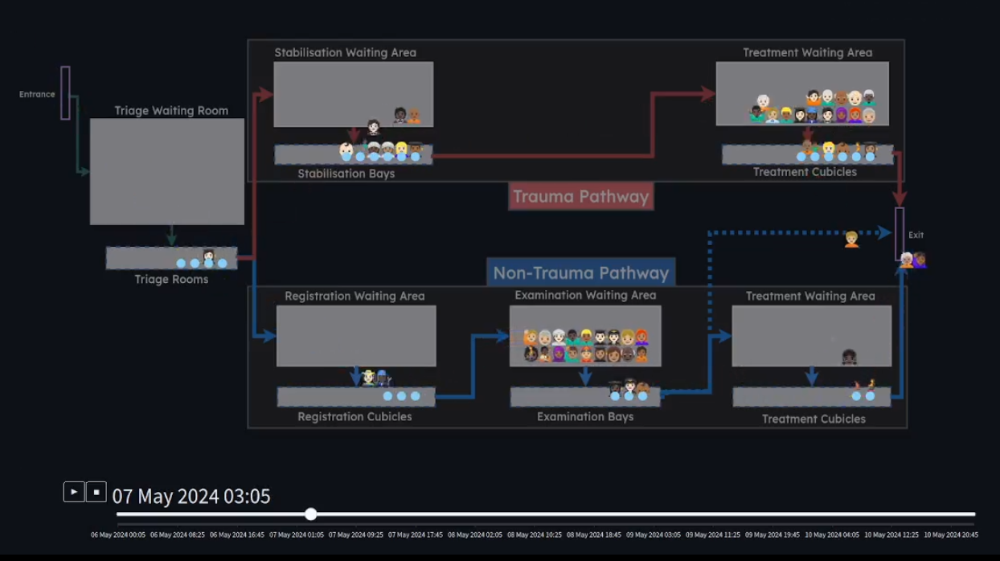
Discrete Event Simulation (DES) is a computer simulation technique, primarily used for tackling queueing problems. Healthcare systems are full of queues - both obvious ones, like in emergency departments, and more 'invisible' ones, like waiting lists for community services. DES provides a way of testing changes to demand, pathway configuration and resourcing in a safe sandbox, allowing policymakers to explore the impact of proposed changes. Using controlled randomness, DES tests whether systems will cope on good days and bad ones, making it a powerful technique for pathway improvement.
R package (built using C++ and Rcpp) implementing the definition of 'avoidable' emergency department attendances, as per the School of Health and Related Research at the University of Sheffield's definition, with reference to NHS Digital's SNOMED/HES coding.
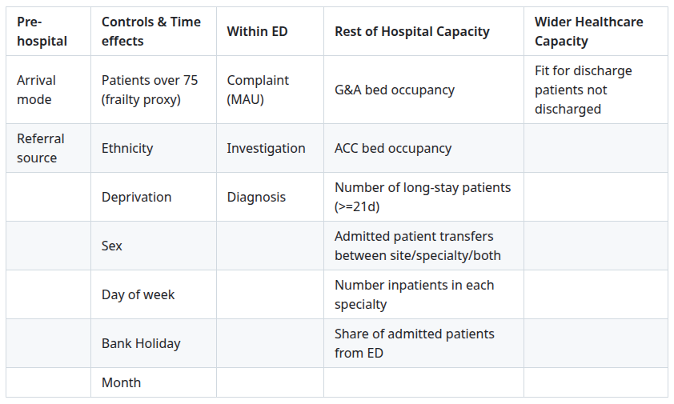
An R Package that uses routinely collected data to explore factors impacting emergency department crowding.
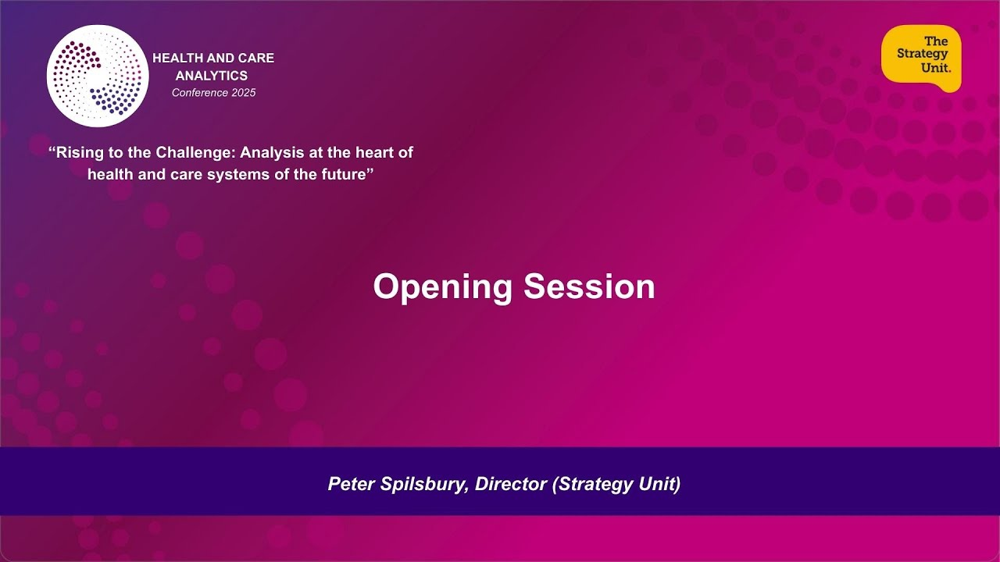
HACA is the UK's national conference for health and care analytics, run by The Strategy Unit since 2023 and free for staff working in health and social care in the UK public sector. It brings together analysts, leaders and decision-makers to share analytical work from across the NHS, local authorities, the civil service, academia and the third sector. Recordings of its keynotes, talks, panel discussions and workshops are available on YouTube.
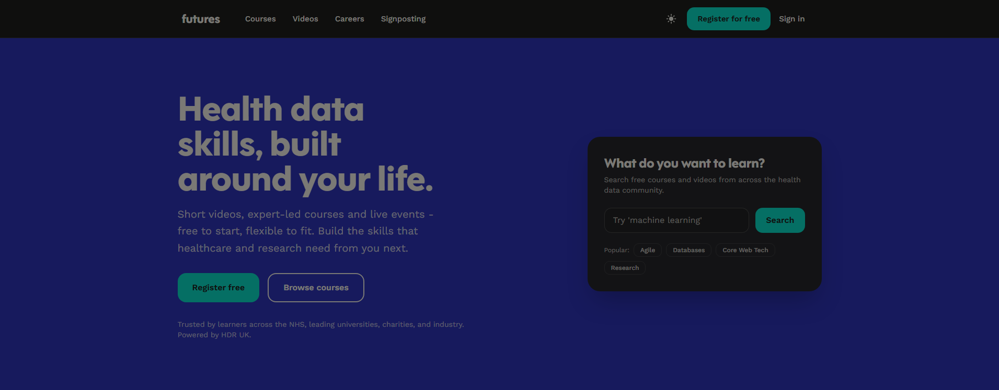
Futures is a free online learning platform from Health Data Research UK (HDR UK), with self-paced expert-led courses, over 100 short videos and live events on health data science. Courses cover topics such as accessing health data, databases and research software engineering. Courses are free, but some modules charge for a certificate.
HSMA-λ is a series of standalone, code-free online workshops from the HSMA team for decision makers in the health service. Each three-hour workshop covers one technique taught on the HSMA programme - simulation, location optimisation or machine learning - so that participants can ask the right questions and interpret project outputs. It is free to people working in public sector healthcare organisations.
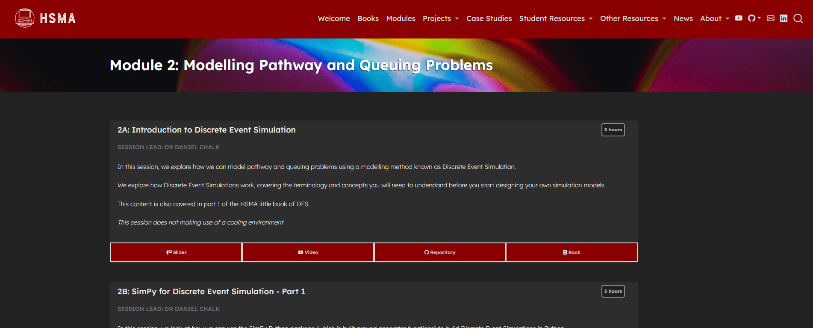
This is a collection of slides, session recordings, code examples, exercises, exercise solutions and solution videos from the discrete event simulation (DES) module of the Health Service Modelling Associates Programme, covering 9 hours of content. It teaches discrete event simulation with the Python SimPy package, assuming no prior knowledge of the package or DES concepts. DES is helpful for building simulations of pathways and services, allowing 'what-if' questions to be tested.
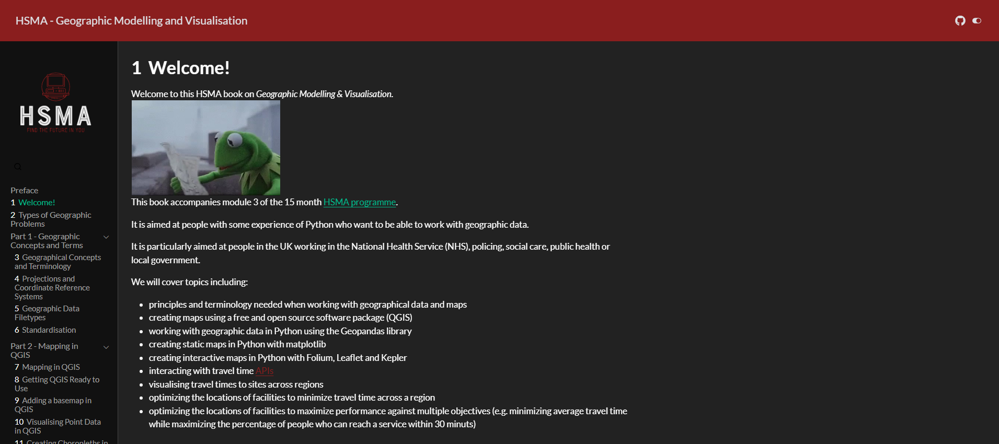
HSMA: Geographic Modelling and Visualisation is a free eBook written to accompany the geographic module of the Health Service Modelling Associates (HSMA) programme. It covers key geographic concepts, making maps in the free point-and-click tool QGIS and in Python, working with travel times, solving facility location problems such as where to place services, and redrawing boundaries.
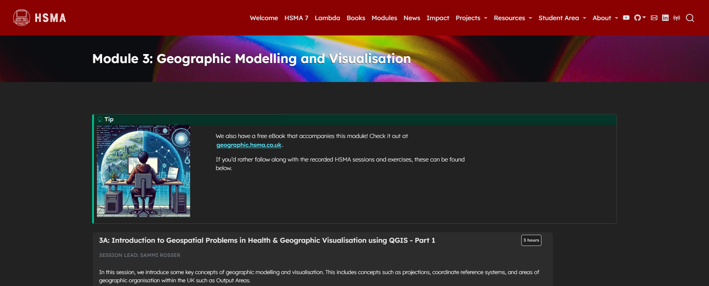
This is a collection of slides, session recordings, code examples and exercises from the geographic modelling and visualisation module of the Health Service Modelling Associates Programme, covering 12 hours of content. It teaches how to make maps in the free point-and-click tool QGIS and in Python with geopandas and folium, how to obtain and use travel time data, and how to solve location optimisation problems such as where to site services.
The Health Service Modelling Associates (HSMA) Programme is a 15-month online training and mentorship course teaching public sector analysts, clinicians and managers to use data science and operational research techniques in Python, and supporting them to apply these in their organisations. It is free for people working in health, social care and policing in England, and all recordings, materials and code are freely available to anyone.
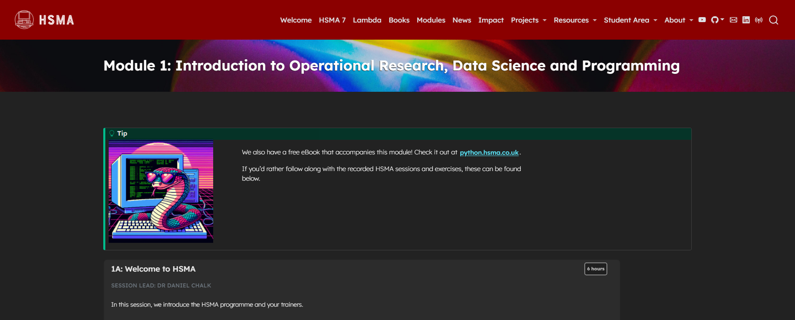
This is a collection of slides, session recordings, code examples and exercises from the introductory module of the Health Service Modelling Associates Programme, covering 36 hours of content. It introduces the fields of operational research and data science, and teaches Python programming from scratch, assuming no prior programming experience.
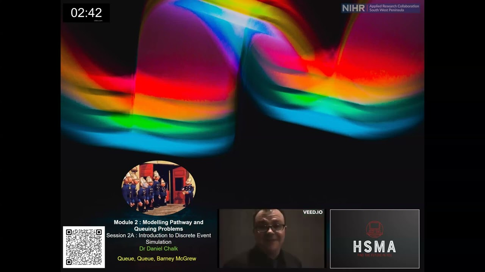
Recordings of the live lectures from the third, fourth, fifth and sixth rounds of the Health Service Modelling Associates (HSMA) programme, plus standalone HSMA masterclasses and workshops. They cover programming in Python (and R in earlier rounds), discrete event simulation, geographic modelling, machine learning, natural language processing, forecasting, network analysis, system dynamics, agent-based simulation, web apps and reproducible reporting.
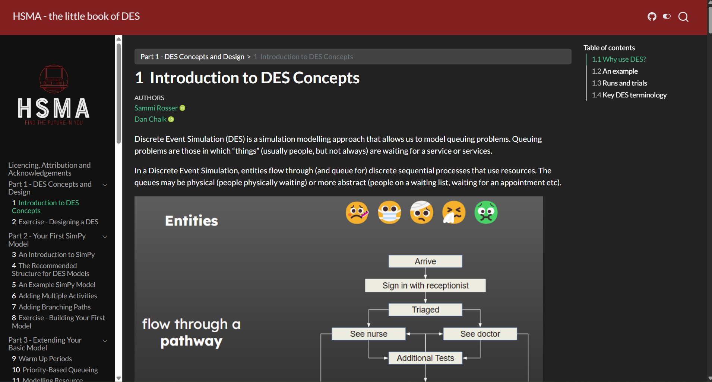
The Little Book of Discrete Event Simulation (DES) is a free eBook written to accompany the DES module of the Health Service Modelling Associates (HSMA) programme. DES is a technique used for building simulations of pathways and services, allowing 'what-if' questions to be tested. The book takes you from being a complete beginner in DES through to creating complex models with a web interface. This Python resource primarily focusses on the SimPy package, also touching on Streamlit and various supporting packages.
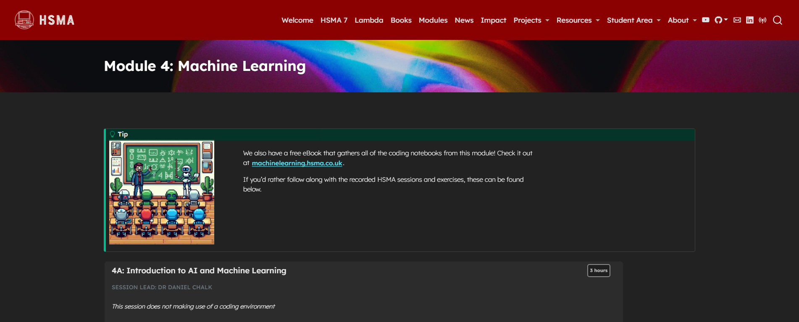
This is a collection of slides, session recordings, code examples and exercises from the machine learning module of the Health Service Modelling Associates Programme, covering 30 hours of content. It teaches classification and regression with scikit-learn and tensorflow, including machine learning ethics, assessing model performance, explainable AI, model optimisation, reinforcement learning and synthetic data.
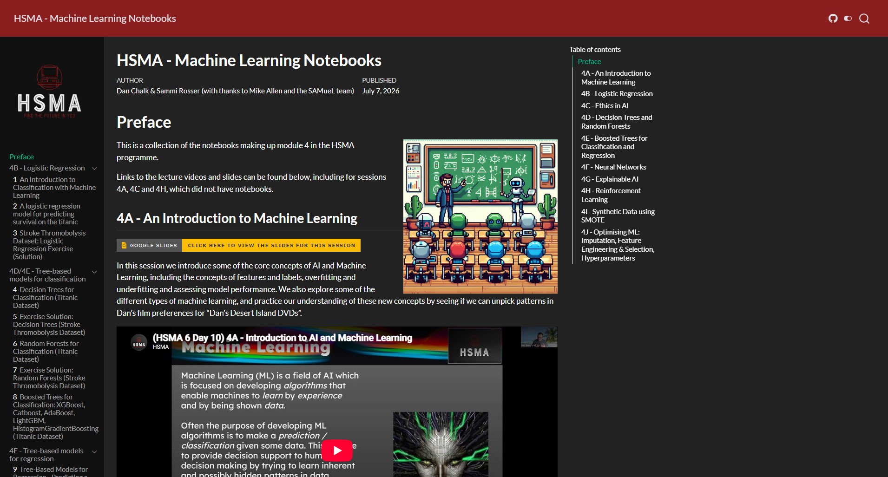
HSMA: Machine Learning Notebooks is a free online collection of the guided code examples from the machine learning module of the Health Service Modelling Associates (HSMA) programme. It covers logistic regression, tree-based models, neural networks, explainable AI, synthetic data and model optimisation in Python, with links to the lecture videos and slides for each session.
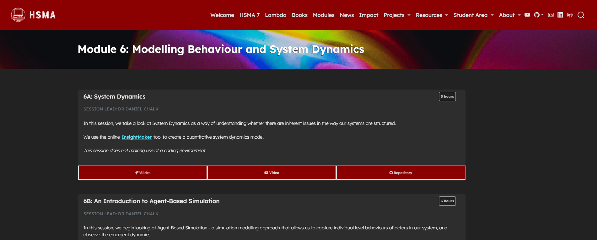
This is a collection of slides, session recordings, code examples and exercises from the system dynamics and agent-based simulation module of the Health Service Modelling Associates Programme, covering 12 hours of content. It introduces system dynamics using the codeless InsightMaker platform, and agent-based simulation in Python using the MESA package.
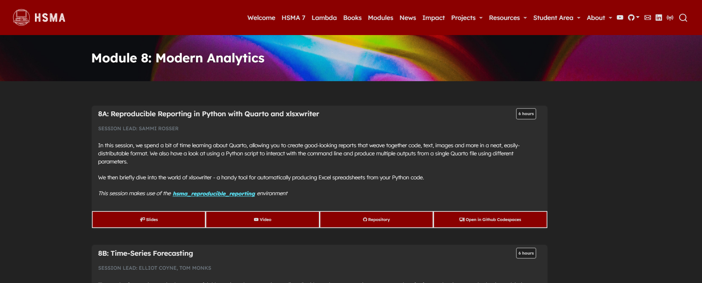
This is a collection of slides, session recordings, code examples and exercises from the modern analytics module of the Health Service Modelling Associates Programme, covering 12 hours of content. It teaches reproducible, parameterised reporting with Quarto and xlsxwriter, and time-series forecasting in Python, including the Prophet library.
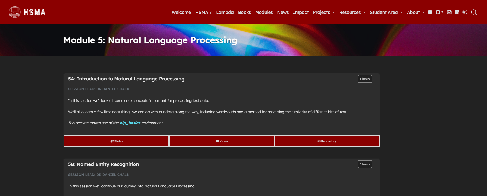
This is a collection of slides, session recordings, code examples and exercises from the natural language processing (NLP) module of the Health Service Modelling Associates Programme, covering 15 hours of content. It teaches how to make sense of unstructured text data in Python, covering word frequencies and wordclouds, named entity recognition, and sentiment analysis with neural networks.
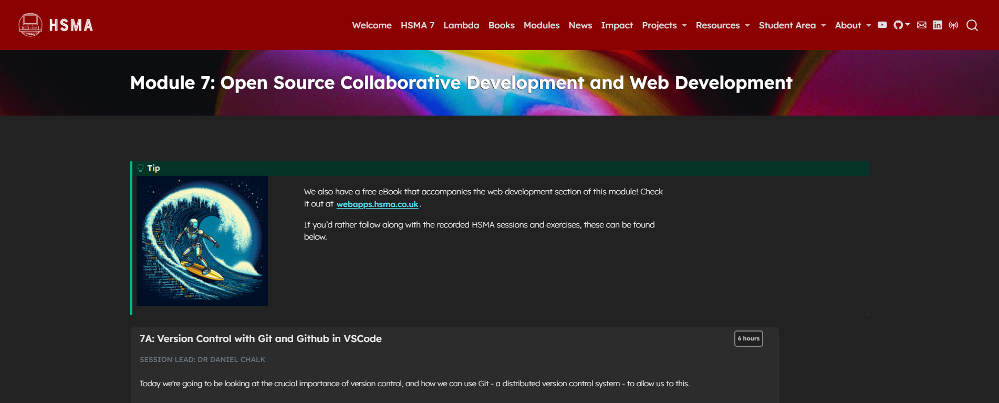
This is a collection of slides, session recordings, code examples and exercises from the open source collaborative development and web development module of the Health Service Modelling Associates Programme, covering 18 hours of content. It teaches version control with Git and GitHub, and how to build and deploy interactive web apps in Python with Streamlit.
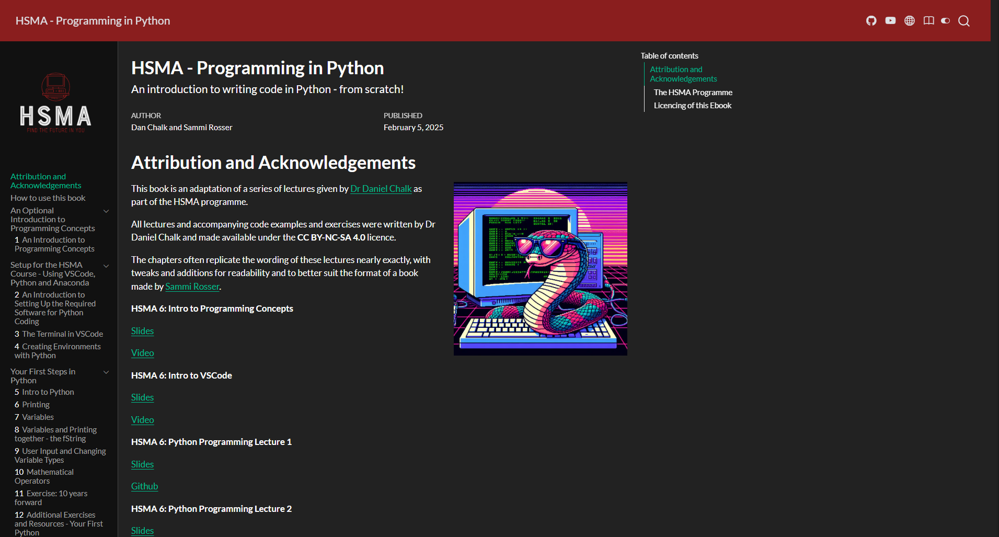
HSMA: Programming in Python is a free eBook that teaches Python from scratch, written to accompany the introductory module of the Health Service Modelling Associates (HSMA) programme. It covers data types, lists, dictionaries, loops, conditional logic, functions, packages, error handling and object oriented programming, plus an introduction to numpy, pandas and creating graphs.
Recordings of project presentations from the showcases of the Health Service Modelling Associates (HSMA) programme, where participants present the modelling and data science projects they have carried out in their own health, social care and policing organisations. Projects use techniques such as discrete event simulation, machine learning, natural language processing, forecasting and geographic modelling.
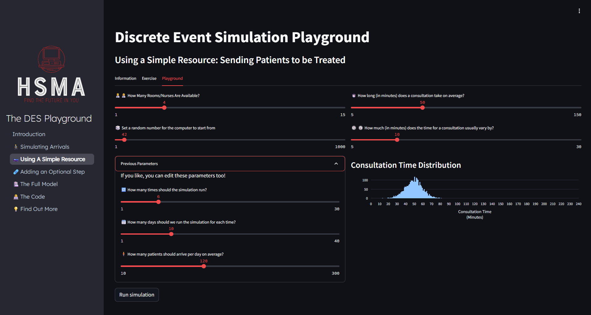
The Discrete Event Simulation (DES) playground is an interactive web application designed to teach the fundamental concepts of DES to absolute beginners. Used to support a range of training sessions, it can also be used as a standalone tool to introduce yourself to why DES is useful, building up from a very simple to a more complex model and allowing you to explore the impact of changing a range of parameters. DES is used for building simulations of pathways and services, allowing 'what-if' questions to be tested.
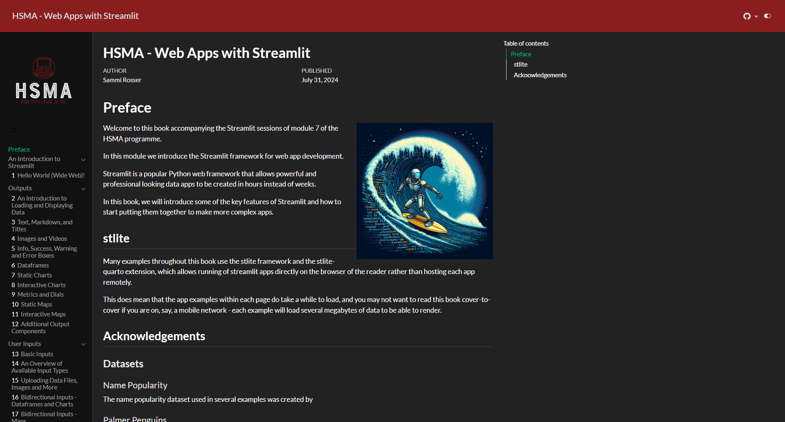
HSMA: Web Apps with Streamlit is a free eBook written to accompany the Streamlit sessions of the Health Service Modelling Associates (HSMA) programme. It takes you from your first Streamlit app through to deploying it on a free hosting service, and acts as a reference guide for techniques such as multi-page apps, download buttons, partial reruns, custom styling, caching, session state and stlite.
HaCORN (the Health and Care Operational Research Network) is a UK network for analysts and researchers applying operational research and data science to health and social care. It began during the COVID-19 pandemic as the National COVID-19 Operational Research Network (N-CORN), and now meets online every month, with guest speakers, learning opportunities and subgroups on specific methods and topics.
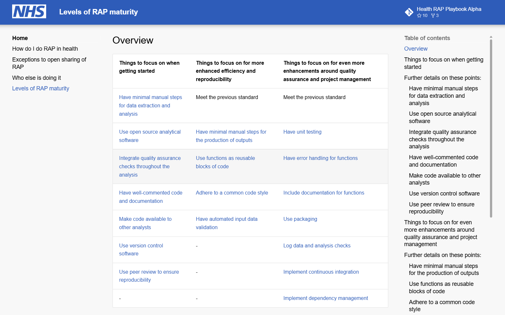
The Health RAP Playbook, maintained by NHS England, documents the processes, tools and technologies used in health and care when creating Reproducible Analytical Pipelines (RAP). It complements existing UK Government and NHS RAP guidance, and is aimed at analysts, analytical leaders, IT, cyber and information governance professionals, and members of the public.
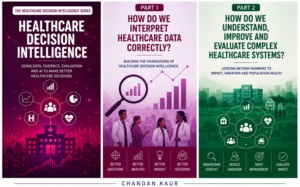
Healthcare Decision Intelligence is a free eBook series helping analysts, clinicians, managers and decision-makers to interpret, question and use healthcare data responsibly. Grounded in realistic NHS scenarios, its modules cover topics such as rates, variation, fair comparison, reading dashboards, evaluation, uncertainty, demand and capacity, data quality, health economics and population health management, each with questions decision-makers should ask. It is accompanied by an interactive companion app that recommends what to read next.
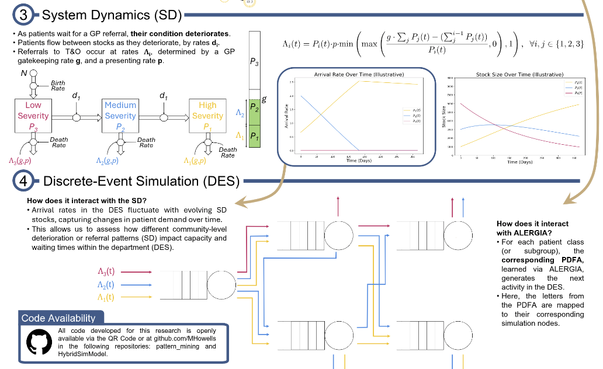
This is a hybrid simulation model for a trauma and orthopaedics department. This combines system dynamics to model patient deterioration while waiting for a General Practitioner (GP) referral in Primary Care, and a discrete event simulation (DES) to model the patient journey through an Orthopaedic department.
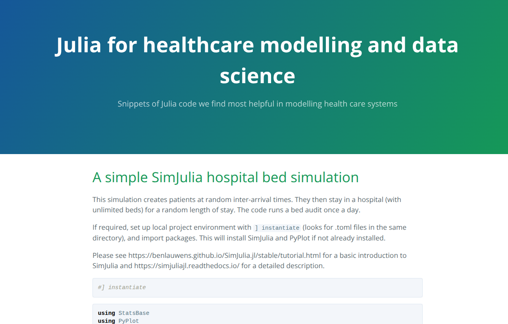
Website with snippets of Julia code helpful for modelling health care systems.
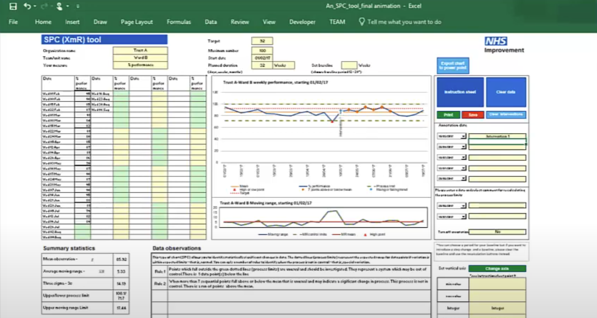
These Excel templates support the creation of statistical process control (SPC) charts adhering to the making data count rules and style. SPC charts are a good alternative to red-amber-green (RAG) rated reporting of metrics, helping to build a more informed picture of a metric's performance over time and spot signals of improvement or deterioration.
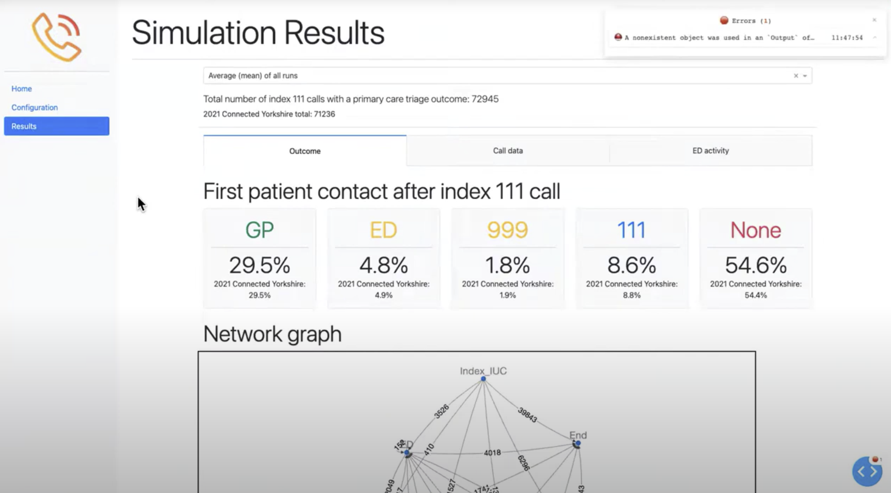
SimPy discrete-event simulation that models how ensuring timely primary care contact for patients triaged by NHS 111 could change subsequent use of 999, Emergency Departments, and inpatient services.
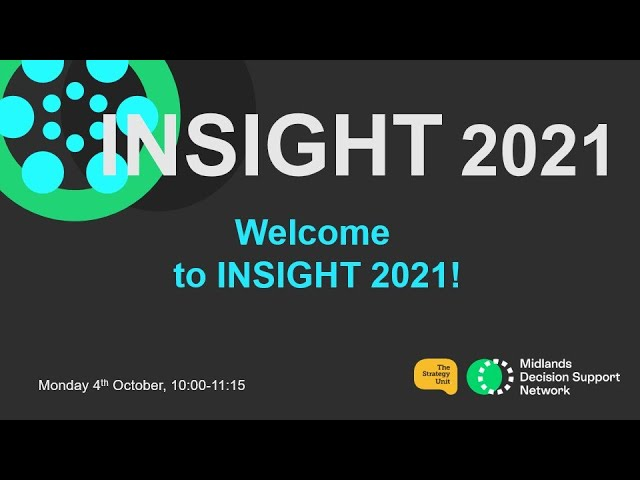
Recordings from Insight, the Midlands Decision Support Network's festival of online events on analysis and decision-making in health and care, hosted by the Strategy Unit. Insight 2020 ran more than 30 events over six weeks, and Insight 2021 continued the festival. Panels, talks and conversations cover topics including COVID-19, health inequalities, social care, evaluation, decision quality, the future of analytics and the role of analysts.
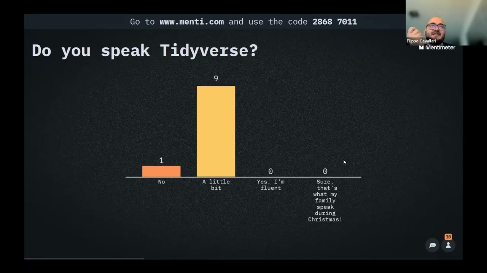
Recordings of training courses for health and care analysts run by the Midlands Decision Support Network (MDSN) in 2022 and 2023, hosted by the Strategy Unit. The multi-session courses cover population health management, health economics and evaluation, time-series forecasting, machine learning, the theory of constraints for patient flow and R Markdown, with each session recorded in full.
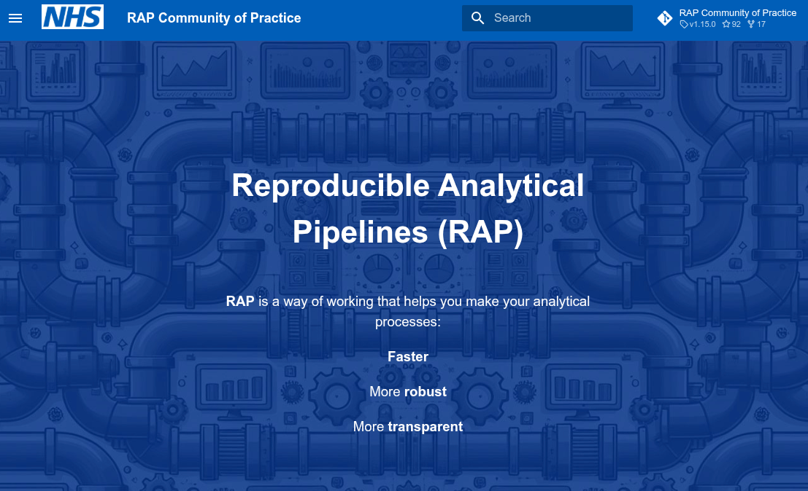
The NHS RAP Community of Practice, maintained by NHS England, supports analysts and teams in adopting reproducible analytical pipeline (RAP) methods.
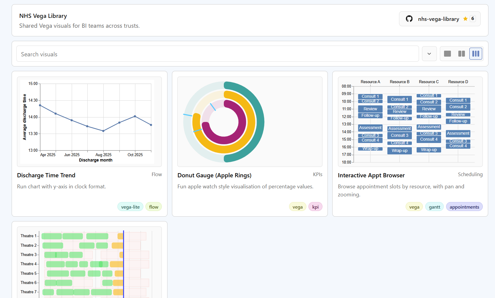
A library of healthcare-specific data visualisations, developed in Vega. Hyper customisable interactive charts and widgets that you own, which can be implemented in Power BI using Deneb, or Python using Altair.
The NHS-OA Community is a community of practice for data analysis and data science using open source software in the NHS and the wider UK health and care system. It runs workshops, webinars, Coffee and Coding sessions, RAP drop-ins, and conferences, and shares blog posts, training materials and books.
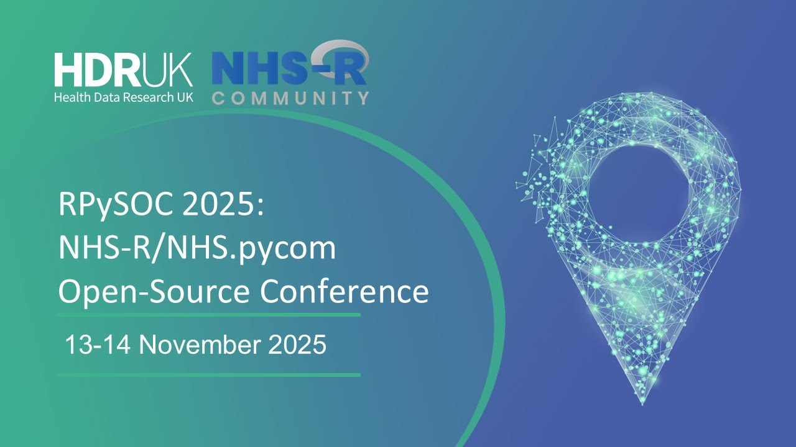
YouTube recordings of talks from the NHS-OA Community's annual conference, formerly the NHS-R Community Conference and now RPySOC, the NHS-R/NHS.pycom open source conference, including the Python track run by the NHS Python Community (NHS.pycom). Talks from analysts and data scientists across health and care showcase real-world projects using R, Python and other open source tools, from simulation and waiting list modelling to data visualisation and reproducible analytical pipelines.
The NHS-R Community's podcast, first released on SoundCloud from 2022 and now on YouTube with edited subtitles. Its episodes cover the history of R and the NHS-R Community, learning R, the team behind the COVID-19 dashboard, and a text mining project for Friends and Family Test feedback.
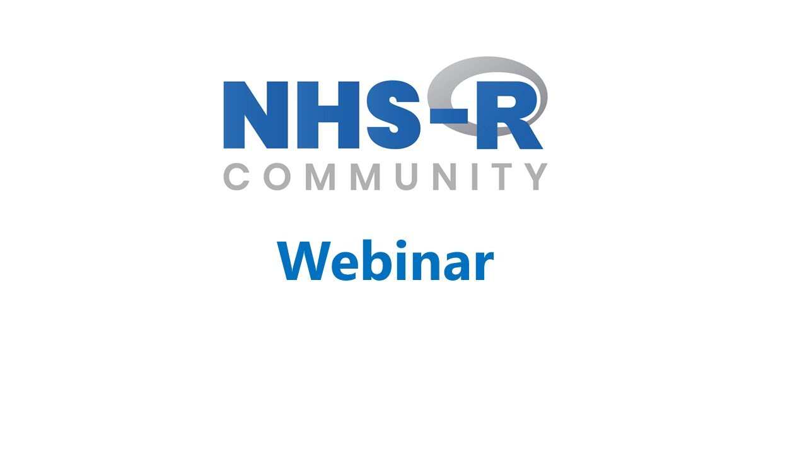
Recorded webinars and talks from the NHS-OA Community and the two communities that merged to form it, the NHS-R Community and the NHS Python Community (NHS.pycom). They cover tools and techniques such as Shiny, Quarto, Git, package development, testing and reproducible environments, introductions to Python and machine learning, and real-world NHS case studies in forecasting, statistical modelling and service planning.
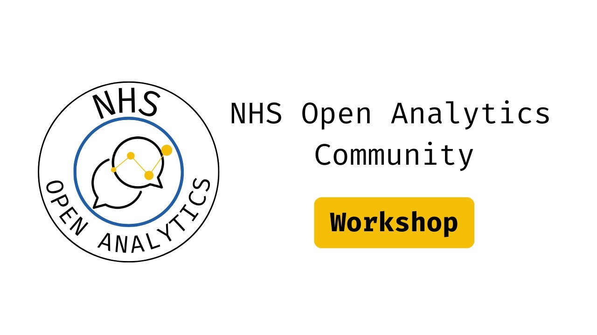
A YouTube playlist of recorded hands-on workshops from the NHS-OA Community and its predecessor, the NHS-R Community. The workshops are mostly in R, from introductory and intermediate R courses through to topics such as data visualisation, Shiny, regression modelling, tidymodels, statistical process control and working with databases.
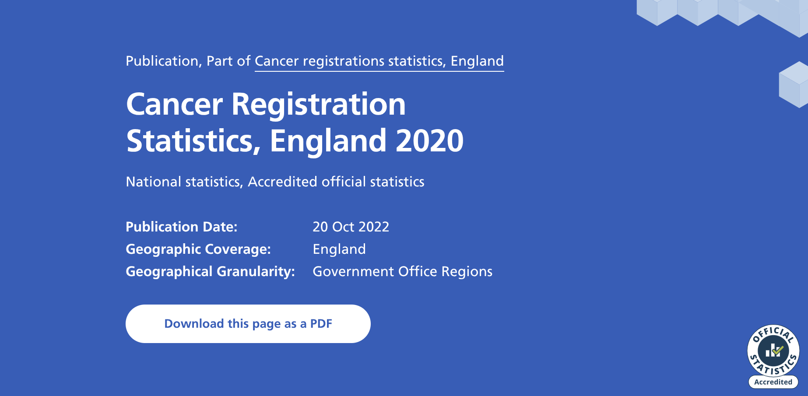
RAP code used for the Cancer Registration Statistics for England in 2020.
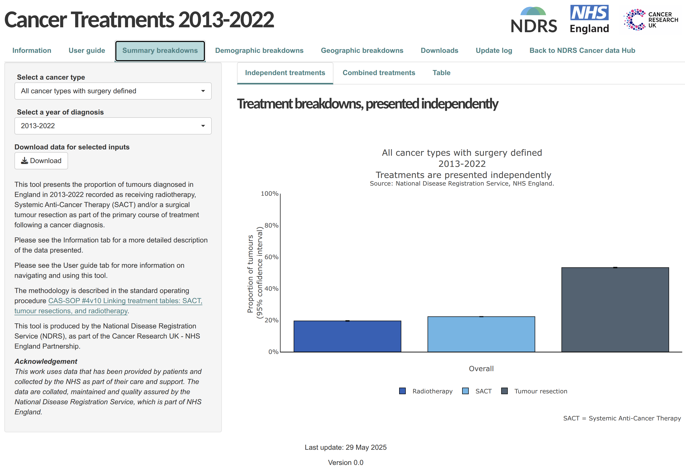
"Shiny app showing the percentage of tumours receiving radiotherapy, Systemic Anti-Cancer Therapy (SACT) and/or a surgical tumour resection as part of the primary course of treatment following diagnosis."

NHSRplotthedots is an R package that simplifies the creation and automation of statistical process control (SPC) charts for KPIs. It helps analysts and teams move beyond static KPIs to understand true performance variation and identify opportunities for improvement.
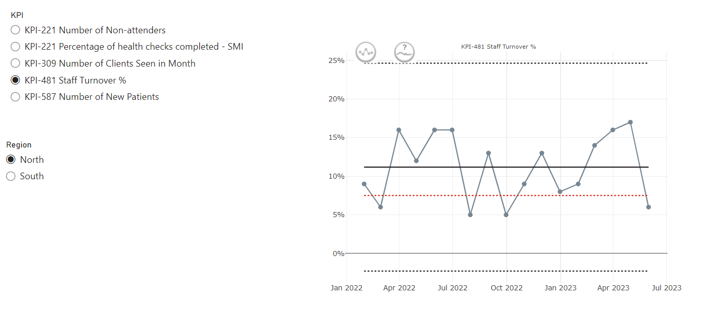
This custom PowerBI visual (based on NHSRplotthedots) simplifies the creation and automation of statistical process control (SPC) charts for KPIs. It helps analysts and teams move beyond static KPIs to understand true performance variation and identify opportunities for improvement, producing R-backed visuals within the setting of PowerBI and integrating with PowerBIs data model and filters.
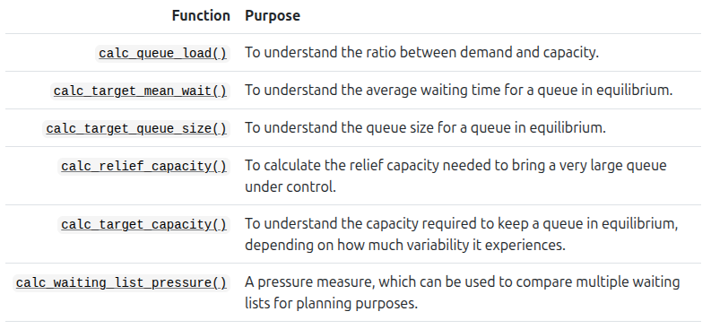
NHSRwaitinglist is an R package implementing the waiting list management approach described in the paper Understanding Waiting Lists Pressures by Fong et al (2022).
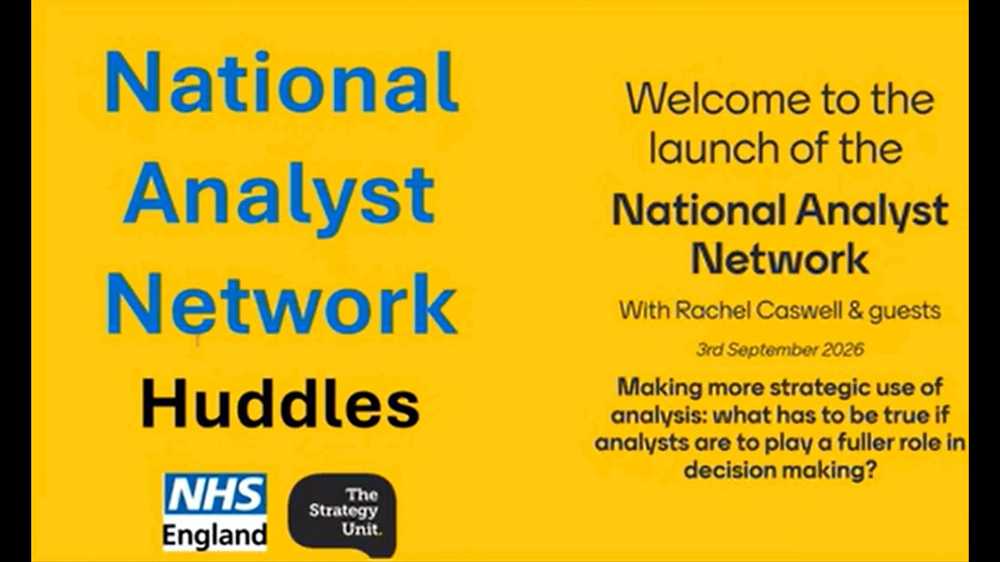
Recordings of the fortnightly online Huddles of the Midlands Analyst Network, hosted by the Strategy Unit, which relaunched as the National Analyst Network in 2026. Each hour-long Huddle features a presenter from health and care, academia or beyond, on topics ranging from health inequalities, waiting lists and demand modelling to data visualisation, RAP and the analyst profession.
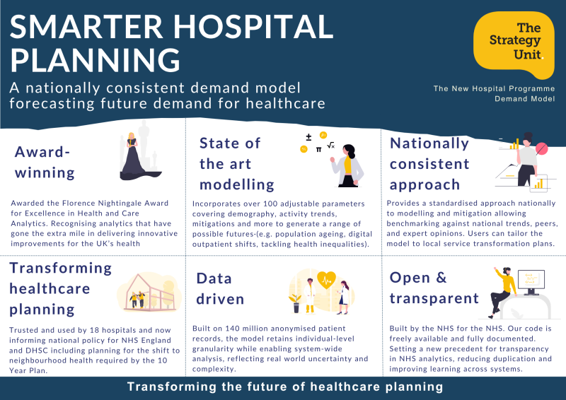
The Demand and Capacity Modelling Tool, developed by the Strategy Unit for DHSC and its partners, supports robust and transparent forecasting of future hospital activity to inform the design and scaling of over 40 new hospitals planned by 2030.
A Python discrete event simulation and Streamlit app that models non‑elective inpatient flow to assess how bed capacity, length of stay and Same Day Emergency Care affects Emergency Department waiting times.

R for Data Science is a free online book that teaches how to do data science with R, from importing and tidying data through to transforming, visualising and communicating it. It is built around the tidyverse collection of packages, including ggplot2, dplyr and tidyr, and Quarto for reporting.
A SimPy discrete event simulation model, used as part of a hybrid modelling approach for investigating interventions in renal care.
SWAIH (South West Analytics and Infrastructure in Healthcare) is a regional network, hosted by the University of Exeter, for analysts, researchers and others using health and care data across the South West of England. It runs an annual meeting, online Insight Talks and workshops, and the SW Data Science Hub, which meets monthly in Exeter. Recordings of its Insight Talks are available on YouTube.
Three examples of discrete-event simulation models implementing the STARS Reusability Framework. This includes simulation models (SimPy, ciw), web apps (streamlit, shiny) and documentation.
Data science course aimed at experienced Health and Social Care Data Professionals.
Wait list simulation framework in development by the Somerset NHS FT DS & Improvement team.
SPC charts are a useful tool for monitoring and reporting, allowing KPIs to be looked at over time and in the context of expected variation, moving away from some of the pitfalls of traditional RAG reporting and providing insights into trends and, if there is a target, whether it is likely to be reliably met.

SPC charts are a useful tool for monitoring and reporting, allowing KPIs to be looked at over time and in the context of expected variation, moving away from some of the pitfalls of traditional RAG reporting and providing insights into trends and, if there is a target, whether it is likely to be reliably met.
Streamlit is a beginner-friendly framework for creating interactive web applications in Python. It is suitable for both dashboard-style interactive tools, as well as interactive graphical interfaces to tools that can be a great way for non-coders to interact with models. With simple sequntial execution and a low barrier to entry, writing your first Streamlit app takes minutes.
An NHS England R script that uses characteristics like size, demographics, deprivation, and ethnicity to calculate lists of ten statistically similar CCGs.
Recordings of webinars from the Strategy Unit, an NHS analysis and evaluation team hosted by NHS Midlands and Lancashire. They include its SU Insights and Neighbourhood Insights series, webinars on developing decision support units and ICS intelligence functions, the Midlands Population Health Management Academy webinar series, and walkthroughs of its end of life care analysis.

Vidigi is an animation library for showing patient flows and bottlenecks in simulations and for historical simulation logs.
A paid book from Wiley on data visualisation best practice for health and healthcare professionals. It covers health and healthcare data, visual perception research, gathering requirements, building teams, and designing tables, graphs, dashboards and reports for health data.
Initial proof of concept and exploratory analysis for the design of a holistic and interactive mapping tool to support decision-making in health and social care. It provides code that could be adapted for walking time to GP practices in a city, driving time between GP practices and hospitals in busy cities in the absence of traffic-aware routing data, and isochrone (maps showing the areas reachable from a point within a specified time) generation.
BPTK-Py is used for the creation of System Dynamics and agent-based simulation models, providing a code-based way of structuring, experimenting with and reproducing these models. These kinds of models are helpful for understanding how complex healthcare systems may react to changes, with system dynamics excelling at 'big picture' modelling of groups and their flows through systems, and agent-based simulation excelling at looking at the overall outcomes arising from the behaviour of individuals.
bupaR (and associated packages across the bupaverse) are libraries for process mining that helps healthcare analysts explore how patient pathways, test result flows, and other clinical processes actually unfold. By turning event data into visual - even animated - process maps and other compelling visuals, it highlights delays, rework, and variations that can guide service improvement.
Ciw is a discrete event simulation (DES) library. It is helpful for building simulations of pathways and services, allowing 'what-if' questions to be tested. Rather than being a general-purpose DES framework like SimPy, Ciw involves defining key elements of your queuing network, and can be a quicker approach for more straightforward models as you don't have to write so much of the logic from scratch.
NHSpy-plotthedots is a Python port of the NHSRplotthedots package that simplifies the creation and automation of statistical process control (SPC) charts for KPIs. It helps analysts and teams move beyond static KPIs to understand true performance variation and identify opportunities for improvement.
NHSRtt is an R package, providing analysts with a simple stock-and-flow modelling framework for NHS referral-to-treatment (RTT) data. The tool supports scenario testing and planning for elective care pathways by translating patient flow data into projections of waiting list size and treatment demand.
Nowcasting uses real-time data and statistical modelling to estimate what is happening right now — before all information has fully arrived. In healthcare, it helps anticipate short-term trends such as hospital admissions or bed occupancy, enabling faster, data-informed operational decisions even when reporting delays or incomplete data make the current situation unclear.
The opencodecounts R package provides easy access to yearly summaries of clinical code usage in England. The package makes NHS England's published datasets available in R and an interactive online tool, covering SNOMED CT codes in primary care and ICD-10/OPCS-4 codes in secondary care.
PatientFlow is a Python package for real-time short-term predictions of hospital bed demand. It uses snapshots of current in-hospital patients as well as expected future arrivals, converts patient-level predictions into aggregated group-level bed-count forecasts, and delivers actionable outputs for bed managers, such as a likely range of the number of beds needed in the next 8 hours for a given specialty. The package is designed for operational, short-term use as opposed to long-term strategic planning.
pm4py is a Python library for process mining that helps healthcare analysts explore how patient pathways, test result flows, and other clinical processes actually unfold. By turning event data into visual process maps, it highlights delays, rework, and variations that can guide service improvement.
Tools to support Discrete-Event Simulation (DES) and Monte-Carlo Simulation education and practice.
Interested in what’s changed since you last visited? Take a look at the most recently added or edited entries below.
This flexible tool uses the Facebook Prophet time series forecasting model to generate forward projections of demand, providing a simple way to turn historical activity data into actionable insights for planning. Intuitive visualisations and narrative summaries highlight trends, seasonal patterns, and uncertainty.
The tool also supports capacity-aware analysis by comparing projected demand against service limits, allowing identification of potential pressure points, quantification of gaps between demand and capacity, and exploration of how changes in assumptions may affect outcomes. Results can be exported as a shareable report.
A library of healthcare-specific data visualisations, developed in Vega. Hyper customisable interactive charts and widgets that you own, which can be implemented in Power BI using Deneb, or Python using Altair.
The Demand and Capacity Modelling Tool, developed by the Strategy Unit for DHSC and its partners, supports robust and transparent forecasting of future hospital activity to inform the design and scaling of over 40 new hospitals planned by 2030.
DES of opthalmology pathways, allowing the exploration of the impact of different anti-VEGF treatment strategies on patients and costs.
R package (built using C++ and Rcpp) implementing the definition of 'avoidable' emergency department attendances, as per the School of Health and Related Research at the University of Sheffield's definition, with reference to NHS Digital's SNOMED/HES coding.
Healthcare Decision Intelligence is a free eBook series helping analysts, clinicians, managers and decision-makers to interpret, question and use healthcare data responsibly. Grounded in realistic NHS scenarios, its modules cover topics such as rates, variation, fair comparison, reading dashboards, evaluation, uncertainty, demand and capacity, data quality, health economics and population health management, each with questions decision-makers should ask. It is accompanied by an interactive companion app that recommends what to read next.
Recordings of the fortnightly online Huddles of the Midlands Analyst Network, hosted by the Strategy Unit, which relaunched as the National Analyst Network in 2026. Each hour-long Huddle features a presenter from health and care, academia or beyond, on topics ranging from health inequalities, waiting lists and demand modelling to data visualisation, RAP and the analyst profession.
Recordings from the Association of Professional Healthcare Analysts (AphA), the professional body for health and care data and analytics professionals in the UK. They include its regular Lunch & Learn webinars, branch meetings, workshops, and its 2020 and 2021 annual conferences, covering topics from statistics, data visualisation and data storytelling to AI, data platforms and the analytical workforce.
HACA is the UK's national conference for health and care analytics, run by The Strategy Unit since 2023 and free for staff working in health and social care in the UK public sector. It brings together analysts, leaders and decision-makers to share analytical work from across the NHS, local authorities, the civil service, academia and the third sector. Recordings of its keynotes, talks, panel discussions and workshops are available on YouTube.
HaCORN (the Health and Care Operational Research Network) is a UK network for analysts and researchers applying operational research and data science to health and social care. It began during the COVID-19 pandemic as the National COVID-19 Operational Research Network (N-CORN), and now meets online every month, with guest speakers, learning opportunities and subgroups on specific methods and topics.
Click here to view all projects, packages and tools.
Contributions are very welcome!
You don’t need to be able to write code or use Quarto to add to the Atlas - there are lots of ways to submit content.
Please see our contributors page for instructions on how to get involved.
Books, Training and Community Resources Documented
Book, Training and Community Entries to be Written
Interested to see what things we propose should be added to the Atlas?
Click on the cards in the right hand column above to see the full list of proposed entries for each type of content.
We’re very grateful to all of our contributors so far!
 Sammi Rosser 💻 🖋 🎨 🤔 🚇 🚧 👀 |
 Amy Heather 💻 🖋 📖 🎨 🚧 |
 Zella King 🐛 |
 padawan 🖋 |
 ReyTan8 🖋 |
Please note that inclusion of a tool on this site does not imply that the HSMA team, NIHR, or any other Atlas contributors, have reviewed these tools in detail. This resource is designed to act as a signpost to the work that is out there, and provide a high-level indication of the health of any given project, but you should always conduct your own reviews of the suitability of any of these tools and techniques for your own use case.
Inclusion of a tool on this page also does not indicate endorsement of the tool author of the HSMA programme, NIHR, the Atlas, or the description written of the tool.
If you have any concerns, or would like any content to be removed, please raise an issue on the repository.